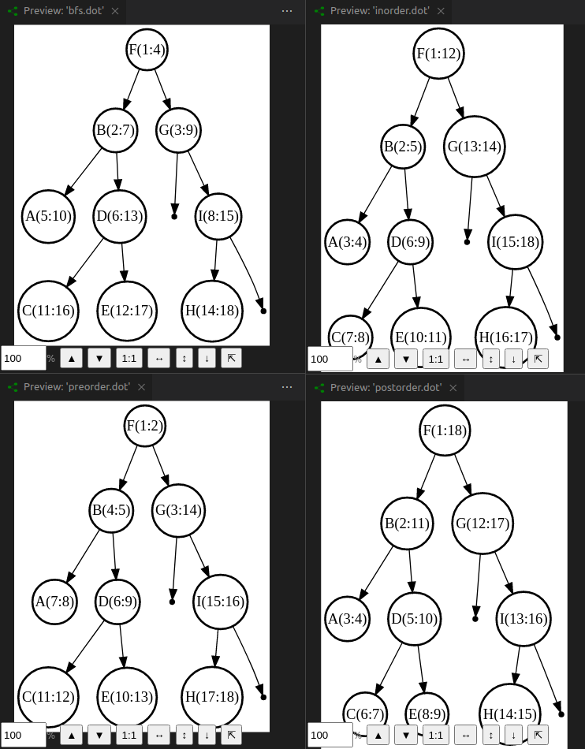

写 C 的时候如果要用解析工具, 首选 yacc 和 lex, 我以前在实际项目中的用过.
写 C++ 的话, 也能用 yacc & lex, 但这样不够 C++. 最后找到 cpp-peglib.
参考作者的 fizzbuzz 的写法, 结构很清晰: source --(parser)--> ast --(interpreter) --> user-data
Playground: https://yhirose.github.io/cpp-peglib/
PEG 是比 CFG(Context-Free grammar) 多一些特性的一种语法, 举个例子, N -> a | b , 如果一个节点为 N , 那么下一步必然先选择 a, 失败了再选 b, 这里面有个优先级. CFG 为什么没有优先级? 我不了解. 我自己手写 parser 的时候用的就是 PEG, 一个可能性失败了, 尝试另一个.
这个库是用 C++17 写的, 里面使用了些新特征, 比如用 string_view 代替 string, variant 代替 union. Yacc 用 union 来返回每颗子树代表的数据. 所以这些工具的逻辑是一样的. 这个库的缺点是使用 constexpr 计算哈希值, 导致编译时间特别长, 8 秒左右.
Graphviz 给出了语法: https://graphviz.org/doc/info/lang.html, 我发现的时候我已经写完了, 所以就不改了.
我做这个的目的在于把图算法做得更可视化, 这是最终效果. 也可以做成动图, 不过目前来说这就够了

代码:
#include <any>
#include <fstream>
#include <map>
#include <peglib.h>
#include <regex>
#include <string>
#include <string>
#include <utility>
#include <variant>
#include <vector>
using namespace peg;
using namespace peg::udl;
using namespace std;
string grammar = R"(
DotFile <- Spacing Graph EndOfFile
Graph <- Keyword Identifier Body
Body <- LPar Entry* RPar
Entry <- Node2Node / GeneralNodeAttr / KVs
GeneralNodeAttr <- NodeKeyWord LBox KVs RBox
Node2Node <- Identifier Connector Identifier NodeAttrs
Connector <- Line / Arrow
NodeAttrs <- LBox KVs RBox
KVs <- Pair (AttrDelim Pair)*
Pair <- Keyword EQ Value Spacing
Value <- Char+
Identifier <- Letter Char* Spacing
Char <- [a-zA-Z_0-9]
Letter <- [a-zA-Z_]
LBox <- '[' Spacing
RBox <- ']' Spacing
LPar <- '{' Spacing
RPar <- '}' Spacing
EQ <- '=' Spacing
Line <- '--' Spacing
Arrow <- '->' Spacing
AttrDelim <- ',' Spacing
NodeKeyWord <- 'node' Spacing
Keyword <- Reserved (!Char) Spacing
Reserved <- ('label' / 'color' / 'margin' / 'shape' / 'penwidth' / 'graph' / 'rankdir')
Spacing <- Space*
Space <- ' ' / '\t' / EndOfLine
EndOfLine <- '\r\n' / '\n' / '\r'
EndOfFile <- !.
)";
struct DestNode
{
string node;
int weight;
};
struct Graph
{
map<string, vector<DestNode>> list;
vector<string> attrs;
void display() const
{
for (auto p : list)
{
cout << p.first << " ";
for (auto e : p.second) {
cout << e.node << ":" << e.weight << " ";
}
cout << endl;
}
}
};
struct NodePair
{
string src;
DestNode dest;
};
struct Entry
{
Entry() : tag(0) {}
Entry(NodePair n, unsigned int t) : np(n), tag(t) {}
NodePair np;
unsigned int tag;
};
using KV = pair<string, string>;
using Attrs = map<string, string>;
struct Value;
using Function = function<Value(const Value &)>;
struct Value
{
variant<nullptr_t, string, bool, long, Attrs, Entry, Graph, KV,
NodePair>
v;
Value() : v(nullptr) {}
explicit Value(bool b) : v(b) {}
explicit Value(long l) : v(l) {}
explicit Value(string s) : v(s) {}
explicit Value(Graph g) : v(move(g)) {}
explicit Value(Entry e) : v(move(e)) {}
explicit Value(NodePair p) : v(move(p)) {}
explicit Value(KV kv) : v(move(kv)) {}
explicit Value(Attrs a) : v(move(a)) {}
template <typename T> T get() const
{
try
{
return std::get<T>(v);
}
catch (bad_variant_access &)
{
throw runtime_error("type error.");
}
}
};
//-----------------------------------------------------------------------------
// Interpreter
//-----------------------------------------------------------------------------
Value eval_char(const Ast &ast, size_t start, size_t end)
{
string s;
for (size_t i = start; i < end; i += 1)
{
s += (*ast.nodes[i]).token;
}
return Value(s);
}
Value eval_value(const Ast &ast)
{
string s;
for (size_t i = 0; i < ast.nodes.size(); i += 1)
{
s += (*ast.nodes[i]).token;
}
return Value(s);
}
Value eval_identifier(const Ast &ast)
{
auto s = string((*ast.nodes[0]).token);
for (size_t i = 1; i < ast.nodes.size() - 1; i += 1)
{
s += (*ast.nodes[i]).token;
}
return Value(s);
}
#define eval_keyword eval_identifier
Value eval_pair(const Ast &ast)
{
auto key = eval_keyword(*ast.nodes[0]).get<string>();
auto value = eval_value(*ast.nodes[2]).get<string>();
return Value(KV{key, value});
}
Value eval_kvs(const Ast &ast)
{
Attrs attrs;
for (size_t i = 0; i < ast.nodes.size(); i += 2)
{
auto p = eval_pair(*ast.nodes[i]).get<KV>();
attrs.insert(p);
}
return Value(attrs);
}
Value eval_nodeattrs(const Ast &ast)
{
return eval_kvs(*ast.nodes[1]);
}
Value eval_node2node(const Ast &ast)
{
NodePair p;
p.src = eval_identifier(*ast.nodes[0]).get<string>();
p.dest.node = eval_identifier(*ast.nodes[2]).get<string>();
// auto conn = eval(*ast.nodes[1]).get<string>();
auto attrs = eval_nodeattrs(*ast.nodes[3]).get<Attrs>();
string w = string(attrs["label"]);
p.dest.weight = atoi(w.c_str());
return Value(Entry{p, "Node2Node"_});
}
Value eval_subentry(const Ast &ast)
{
auto tag = "Node2Node"_;
if ((*ast.nodes[0]).tag == tag)
{
return eval_node2node(*ast.nodes[0]);
}
else
return Value(Entry());
}
Value eval_entry(const Ast &ast)
{
return eval_subentry(ast);
}
Value eval_body(const Ast &ast)
{
Graph graph;
for (size_t i = 1; i < ast.nodes.size() - 1; i += 1)
{
auto e = eval_entry(*ast.nodes[i]).get<Entry>();
if (e.tag == "Node2Node"_)
{
if (graph.list.find(e.np.src) == graph.list.end())
{
graph.list[e.np.src] = vector<DestNode>{e.np.dest};
}
else
{
graph.list[e.np.src].push_back(e.np.dest);
}
}
}
return Value(graph);
}
Value eval_graph(const Ast &ast)
{
return eval_body(*ast.nodes[2]);
}
Value eval_dotfile(const Ast &ast)
{
return eval_graph(*ast.nodes[1]);
}
Value interpret(const Ast &ast)
{
return eval_dotfile(ast);
}
shared_ptr<Ast> parse(const string &grammar, const string &source)
{
parser parser(grammar);
parser.enable_ast();
std::shared_ptr<Ast> ast;
if (parser.parse_n(source.data(), source.size(), ast))
{
return ast;
}
return nullptr;
}
int main(int argc, char **argv)
{
string src = R"(
graph A {
A -- B [label=2]
A -- C [label=5]
B -- C [label=6]
B -- E [label=3]
B -- D [label=1]
C -- F [label=8]
D -- E [label=4]
E -- G [label=9]
F -- G [label=7]
}
)";
auto ast = parse(grammar, src);
if (!ast)
{
return 3;
}
auto graph = interpret(*ast).get<Graph>();
graph.display();
}
结果:
A B:2 C:5
B C:6 E:3 D:1
C F:8
D E:4
E G:9
F G:7